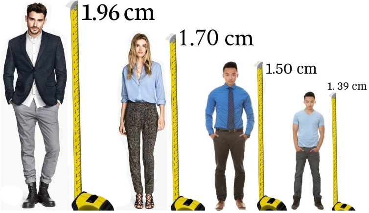

Tarea: Actividad De Desarrollo
- Duración:
- 12:00
- Agrupamiento:
- 4

La actividad consiste en realizar un censo sobre la estatura y el peso de una muestra de 15 alumnos de clase.
Para ello, se formarán equipos de 4 personas, que se encargarán de seleccionar y entrevistar a sus compañeros, así como, registrar y analizar los datos obtenidos. El objetivo es identificar la relación entre las dos variables y el grado de correlación que existe entre ellas.
Para realizar el censo, se utilizará un método de muestreo aleatorio simple, que consiste en elegir al azar a los 15 alumnos de la población total de clase, sin que haya repetición ni preferencia. Cada equipo tendrá una lista numerada de los alumnos.
Una vez seleccionada la muestra, cada equipo procederá a entrevistar a los alumnos elegidos, preguntándoles su estatura y su peso, y registrarán los datos en una tabla como la siguiente:
| Alumno (NOMBRE) | Peso (Kg) | Estatura (cm) |
| 1. | 60 | 167 |
| 2. | 68 | 160 |
| 3. | 45 | 148 |
| 15. | -- | -- |
Con los datos anteriores realizar el diagrama de dispersión, se representan los valores de la estatura y el peso como puntos en un plano cartesiano, y se observa la forma y dirección de la nube de puntos resultante. El diagrama permite identificar el tipo y el grado de correlación entre las variables, es decir, si hay una relación directa, inversa o nula entre ellas, y si esa relación es fuerte o débil. Por ejemplo, si la nube de puntos tiene una forma alargada y una pendiente positiva, significa que hay una correlación positiva y fuerte entre las variables, lo que implica que a mayor estatura, mayor peso, y viceversa.